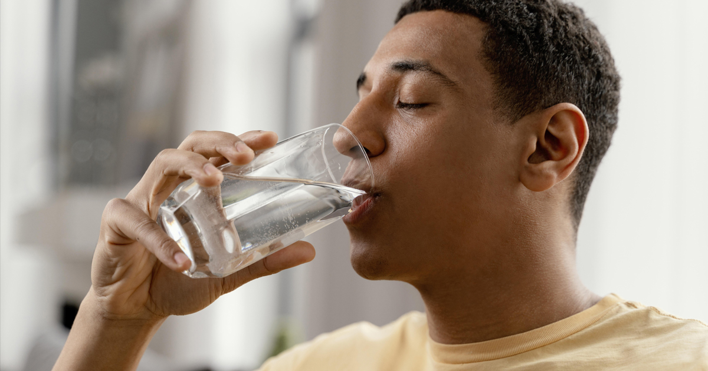
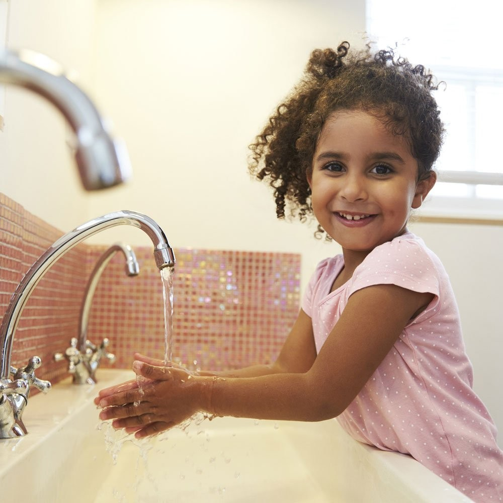
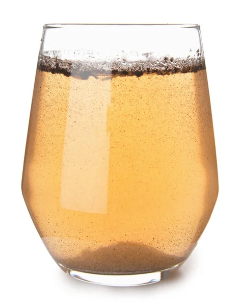
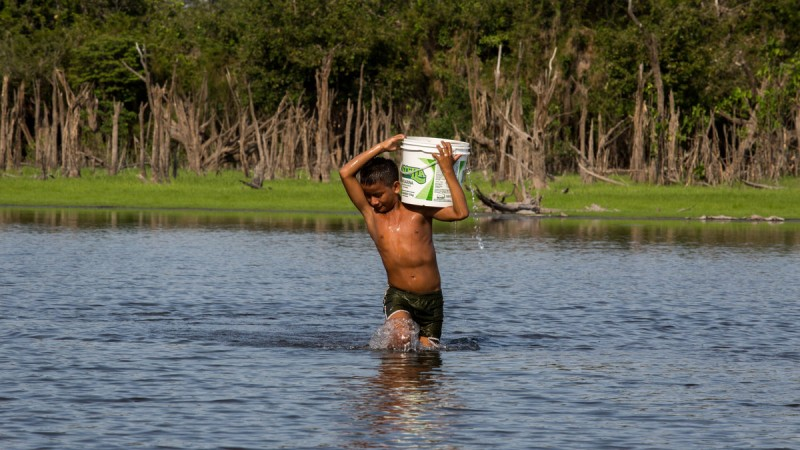
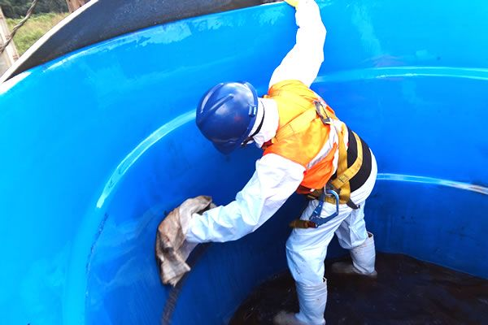
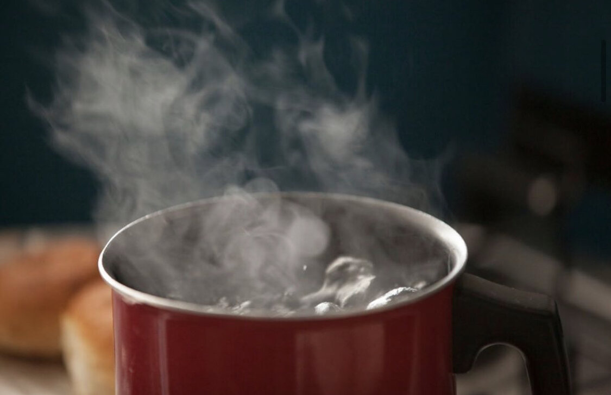
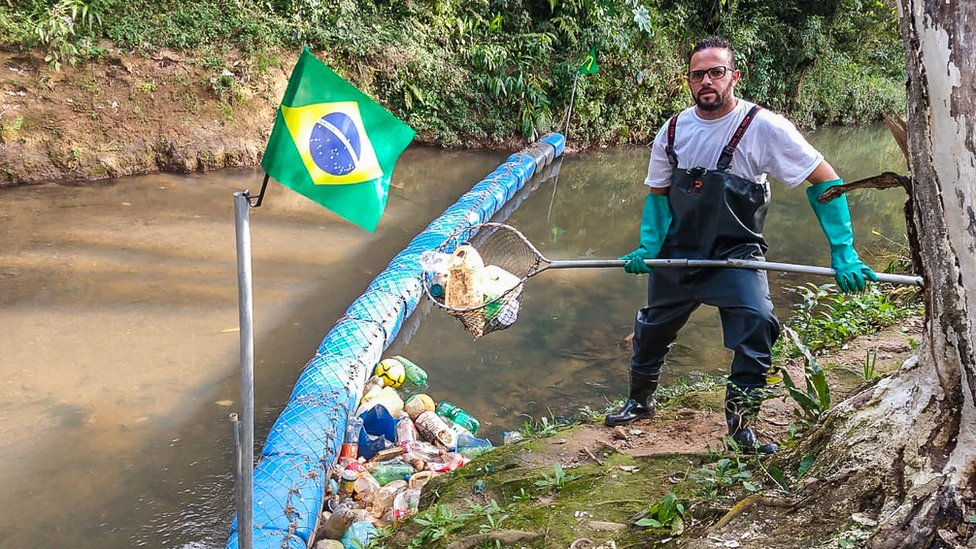

Vamos conhecer mais a respeito da água!
A água é um recurso natural indispensável à vida. Está presente em tudo o que fazemos — não apenas quando
bebemos, mas também quando tomamos banho, escovamos os dentes, lavamos alimentos, cozinhamos ou limpamos a
casa. Muitas vezes, esquecemos o quanto ela é necessária para atividades simples, porque o acesso à água potável
é, felizmente, uma realidade para grande parte da população urbana.
Além do consumo direto, a água tem um papel crucial na agricultura (irrigação de plantações), na indústria
(produção de bens) e na geração de energia elétrica (como nas hidrelétricas). Sem ela, a produção de alimentos,
roupas, papel, eletrônicos e até medicamentos seria comprometida. A água também regula o clima, ajuda na
purificação do ar e na manutenção dos ecossistemas.
Mesmo com essa importância, o desperdício de água ainda é comum. Muitas pessoas deixam torneiras abertas por
tempo desnecessário ou não se preocupam com pequenos vazamentos. Por isso, é essencial valorizar cada gota e
lembrar que a água potável não é infinita — ela precisa ser cuidada e preservada diariamente.


Que problemas a água causa?
A água é um recurso natural indispensável à vida. Está presente em tudo o que fazemos — não apenas quando
bebemos, mas também quando tomamos banho, escovamos os dentes, lavamos alimentos, cozinhamos ou limpamos a
casa. Muitas vezes, esquecemos o quanto ela é necessária para atividades simples, porque o acesso à água potável
é, felizmente, uma realidade para grande parte da população urbana.
Além do consumo direto, a água tem um papel crucial na agricultura (irrigação de plantações), na indústria
(produção de bens), e na geração de energia elétrica (como nas hidrelétricas). Sem ela, a produção de alimentos,
roupas, papel, eletrônicos e até medicamentos seria comprometida. A água também regula o clima, ajuda na
purificação do ar e na manutenção dos ecossistemas.
Mesmo com essa importância, o desperdício de água ainda é comum. Muitas pessoas deixam torneiras abertas por
tempo desnecessário ou não se preocupam com pequenos vazamentos. Por isso, é essencial valorizar cada gota e
lembrar que a água potável não é infinita — ela precisa ser cuidada e preservada diariamente.


Quais são os problemas causados pela água?
Milhões de pessoas no mundo não têm acesso à água potável e vivem em regiões onde a única água disponível está
contaminada por esgoto, resíduos industriais, pesticidas ou bactérias perigosas. Essa realidade é mais comum do
que se imagina, especialmente em áreas rurais, favelas ou regiões sem saneamento básico.
O consumo de água contaminada pode causar doenças como hepatite A, febre tifoide, cólera, giardíase, amebíase
e até problemas neurológicos em casos mais extremos. Crianças pequenas, idosos e pessoas com baixa imunidade
são os mais afetados. Segundo a Organização Mundial da Saúde (OMS), cerca de 1,7 milhão de mortes por ano são
causadas por doenças relacionadas à água poluída.
Além dos problemas de saúde, a água suja dificulta a higiene pessoal, compromete a segurança alimentar e
prejudica o desenvolvimento econômico de comunidades. Uma população doente não consegue trabalhar, estudar
ou produzir com qualidade. Por isso, garantir água potável é mais do que uma questão ambiental — é uma questão
de dignidade, justiça social e saúde pública.


Qual é o papel da sociedade na preservação da água?
A preservação da água é responsabilidade de todos, não apenas das autoridades e governos. Cada pessoa pode
contribuir para a conservação desse recurso tão essencial, adotando práticas conscientes no dia a dia.
É importante evitar o desperdício, como deixar torneiras abertas desnecessariamente ou usar grandes quantidades
de água em atividades simples. Consertar vazamentos em casa, instalar sistemas de reutilização de água da chuva
e optar por aparelhos mais eficientes são pequenas atitudes que fazem toda a diferença.
Além disso, a conscientização sobre o uso responsável da água pode ser ampliada por meio de campanhas educativas,
ações de limpeza de rios e praias, e incentivando a preservação dos recursos hídricos nos diferentes setores da
sociedade.


Contato
Informações de contato e formulário.